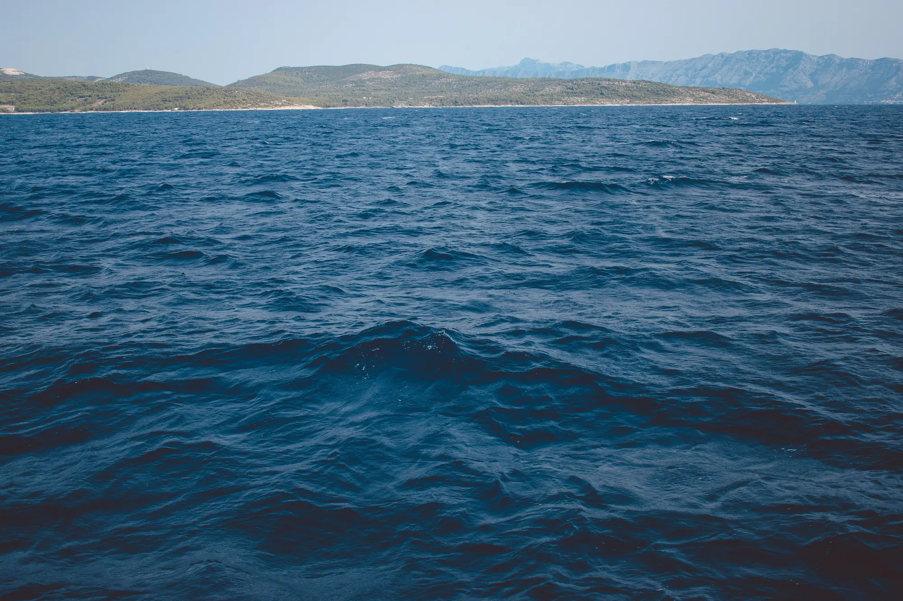

Brendovi
Brendovi
Njemačka preciznost u brodogradnji: Kako nastaju Granfort plovila
Otkrijte kako partnerstvo s Porsche Consultingom diktira savršenu inženjersku preciznost i donosi strukturno jamstvo od 10 godina...
Pročitaj više

Svijet premium plovila i nautike
Brendovi
Otkrijte kako partnerstvo s Porsche Consultingom diktira savršenu inženjersku preciznost i donosi strukturno jamstvo od 10 godina...
Pročitaj više Luksuz
Luksuz
Saznajte kako je vakuumska infuzija stakloplastike i revolucionarni Beach Club sustav s hidrauličnim balkonima redefinirao sidrenje...
Pročitaj više Vodič
Vodič
Tehnologija se promijenila. Donosimo tri ključna razloga zašto vanbrodski pogon danas nudi više prostora, jeftiniji servis i lakše održavanje...
Pročitaj više